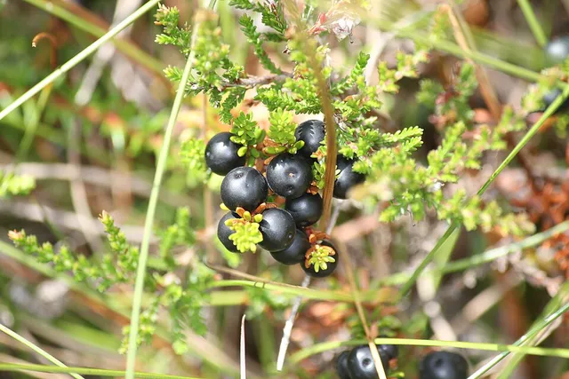
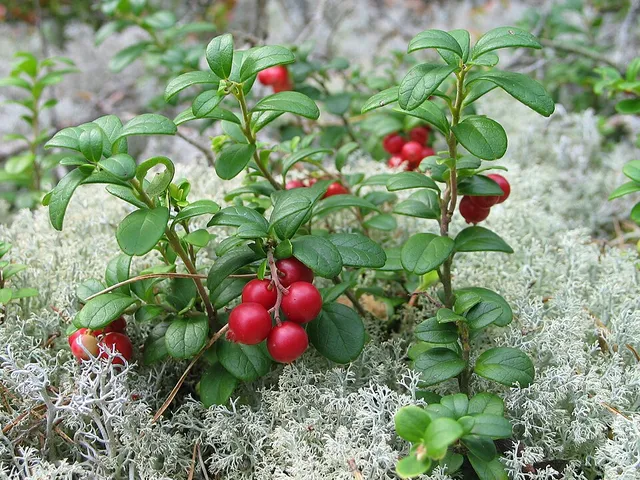

Wild food recipes from Norway
17 dishes made with foraged ingredients, from drinks and preserves to mains and desserts.
Drinks
 Blackcurrant cordial (solbærsaft)Wild blackcurrant
Blackcurrant cordial (solbærsaft)Wild blackcurrant
Crowberry juice (kreklingsaft)Crowberry Elderflower cordial (hylleblomstsaft)Elderflower
Elderflower cordial (hylleblomstsaft)Elderflower Spruce tip syrup (granskuddsirup)Spruce tips
Spruce tip syrup (granskuddsirup)Spruce tips
Starters & snacks
 Steamed mussels (blåskjell)Blue mussels
Steamed mussels (blåskjell)Blue mussels Dulse crisps (søl)Dulse
Dulse crisps (søl)DulseSauces, preserves & sides

Lingonberry jam (tyttebærsyltetøy)Lingonberry Rowan jelly (rognebærgelé)Rowan berries
Rowan jelly (rognebærgelé)Rowan berries Wild garlic butter (ramsløksmør)Wild garlic
Wild garlic butter (ramsløksmør)Wild garlic Juniper-cured game sauceJuniper berries, Lingonberry
Juniper-cured game sauceJuniper berries, Lingonberry
 Nettle soup (nesle suppe)Stinging nettle
Nettle soup (nesle suppe)Stinging nettle Sugar kelp salad (sukkertare)Sugar kelp
Sugar kelp salad (sukkertare)Sugar kelp Bilberry muffins (blåbærmuffins)Bilberry
Bilberry muffins (blåbærmuffins)Bilberry Raspberry cream (bringebærkrem)Wild raspberry
Raspberry cream (bringebærkrem)Wild raspberry Rose hip soup (nypesuppe)Rose hips
Rose hip soup (nypesuppe)Rose hips